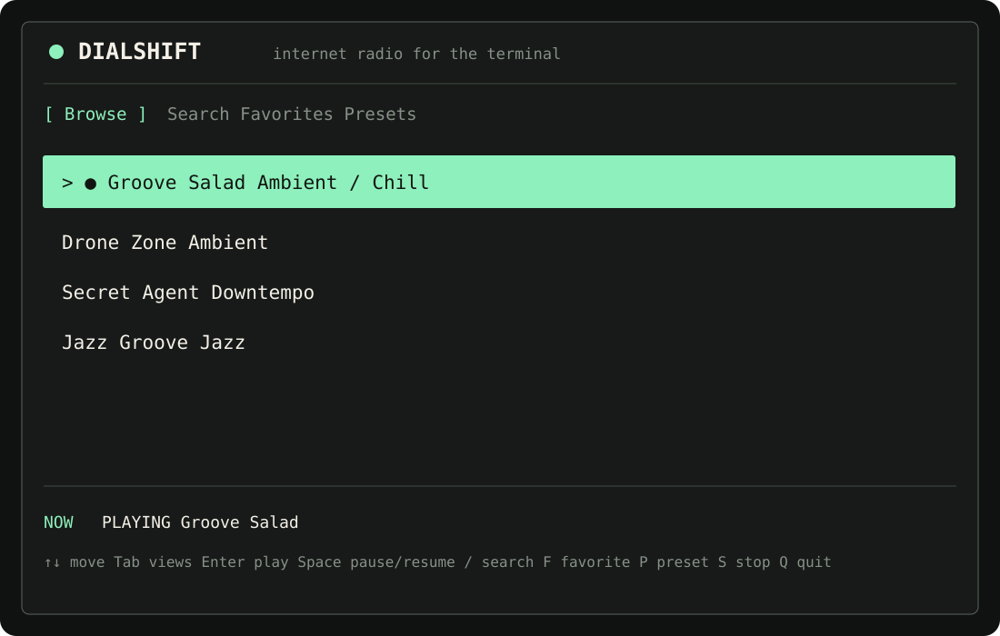

01 / TUNE IN
Internet radio.
In your terminal.
Find a station, save a preset, and listen while you work.
macOS verified · Node 20+ · mpv playbackLIVE SIGNAL 128 KBPS

02 / THE SIGNAL
Bring a small, living soundtrack to the same place you build, write, and think. Dialshift gives browserless radio a home beside your prompt.
03 / QUICKSTART
Start listening in
under a minute.
Install the player once, then tune from any shell.
$ npm install && npm run build
$ brew install mpv && npm link
$ dialshift
# Or start a saved preset
$ dialshift play focus
$ dialshift next
$ dialshift stop04 / YOUR PRESETS
dialshift play focus → dialshift next → dialshift stop
A preset is an ordered, portable list of stations. Start it once, then control the same local playback session from another terminal.
05 / SHORTCUTS
↑ ↓ Move stations
Tab Switch views
Enter Play
Space Pause / resume
/ Search directory
F Favorite station
S Stop playback
Q Quit tuner